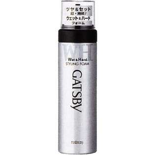

返回列表
产品名称：ギャツビー スタイリングフォーム ウェット＆ハード

マンダム ギャツビー スタイリングフォーム ウェット＆ハード １８５ｇ
メーカー マンダム
JANコード 4902806583380
商品の特徴
ベタつきにくく濡れたようなツヤ＆ハードセット超持続。
成分・分量
水、エタノール、ＬＰＧ、グリセリン、マルチトール、グリセレス-１２、ミネラルオイル、（ビニルピロリドン／ＶＡ）コポリマー、ポリクオタニウム-１１、ステアルトリモニウムクロリド、セテス-１５、ステアリン酸ソルビタン、パンテノール、ブチルパラベン、メチルパラベン、香料
用法及び用量
○缶をよく振り 頭部を真下にしてお使いください